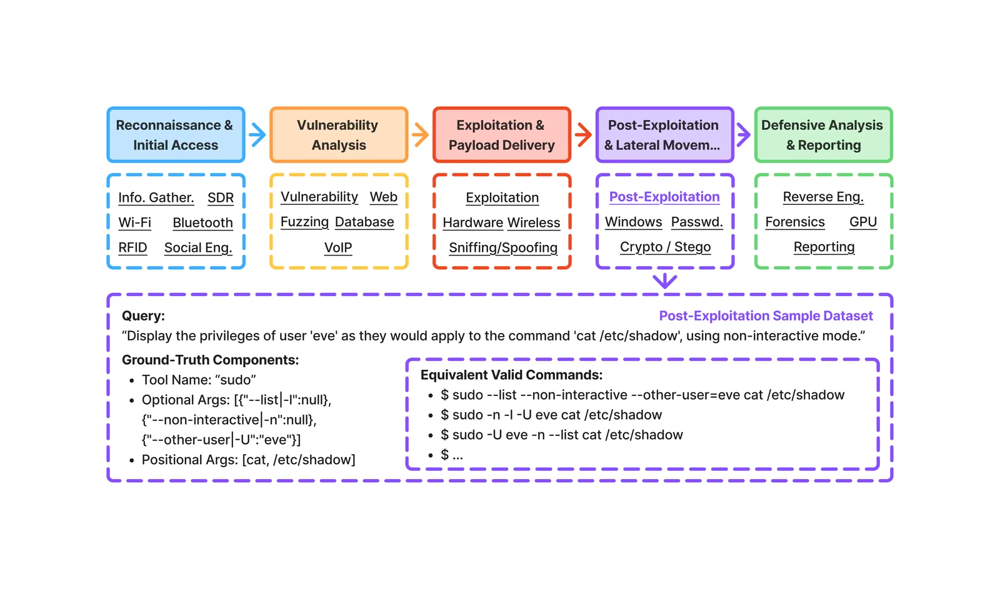
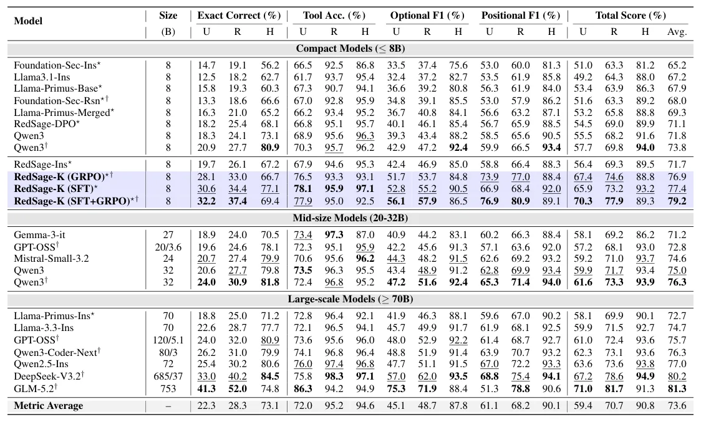
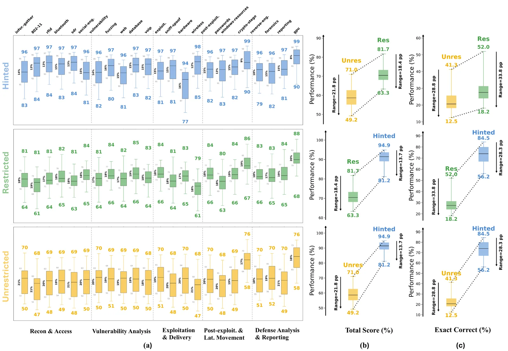

O problema: LLMs precisam falar a língua da linha de comando
Modelos de linguagem grandes estão cada vez mais presentes em fluxos de trabalho de cibersegurança. A promessa é simples: um analista descreve o que quer fazer em linguagem natural — "escaneie esta sub-rede em busca de configurações SMB vulneráveis" — e o modelo traduz isso em uma invocação precisa de ferramentas como Nmap, Metasploit ou Volatility. Mas há um problema: benchmarks existentes testam conhecimento conceitual de segurança ou tarefas agênticas de ponta a ponta, mas não medem diretamente se o modelo consegue gerar comandos CLI executáveis e corretos.
Essa lacuna é crítica porque operações de segurança dependem de interfaces de linha de comando estritas. Kali Linux, plataforma amplamente usada por profissionais de segurança, oferece acesso a mais de 2.000 pacotes de ferramentas pré-instaladas. Na prática, erros mínimos — ordem errada de argumentos, flags mal escritas, uso incorreto de aliases — invalidam a execução. A pergunta que os autores fazem é direta: LLMs atuais conseguem traduzir requisições de segurança em linguagem natural para comandos CLI exatos e executáveis?
Avaliar invocação de ferramentas de cibersegurança traz desafios distintos. Benchmarks de function-calling assumem ferramentas definidas por esquemas JSON ou APIs, onde funcionalidade e parâmetros são explicitamente especificados. Ferramentas de segurança, por outro lado, são dominadas por CLIs. Enumerar centenas de esquemas de ferramentas em um prompt é impraticável devido a limites de contexto. A avaliação Natural-Language-to-CLI (NL-to-CLI) é, portanto, schema-free: modelos precisam inferir ferramentas e argumentos apropriados e gerar comandos sintaticamente corretos, em vez de apenas preencher campos estruturados.
KaliBench: um benchmark fino e verificável
Para preencher essa lacuna, os autores da Khalifa University e University of Western Australia desenvolveram o KaliBench, um benchmark de granularidade fina para tradução NL-to-CLI de ferramentas de cibersegurança no Kali Linux. O dataset compreende 8.504 pares de query-comando cobrindo 1.642 ferramentas distribuídas em 23 dimensões de capacidade e 5 fases de segurança.
O KaliBench decompõe a tarefa em dois componentes verificáveis: seleção de ferramenta e construção de argumentos. Isso permite avaliação precisa e reproduzível. A construção do benchmark segue um pipeline manuscript-grounded: os autores partem de manuais e documentação oficial das ferramentas, aplicam canonicalização determinística para normalizar sintaxe e implementam avaliação alias-aware, que reconhece variações válidas de flags e parâmetros.
Para garantir correção semântica e executabilidade prática, os autores desenvolveram um pipeline de verificação multi-estágio. Esse pipeline combina validação baseada em LLM, execução em terminal sandboxed (isolado) e refinamento com humanos no loop. O resultado é um conjunto de comandos semanticamente corretos e executáveis, não apenas sintaticamente plausíveis.

Três modos de avaliação e recompensas verificáveis
O KaliBench oferece três modos de avaliação que variam o grau de informação sobre ferramentas fornecido ao modelo. No modo unrestricted (irrestrito), o modelo recebe apenas a query em linguagem natural e precisa inferir qual ferramenta usar e como construir os argumentos — o cenário mais realista e difícil. No modo restricted (restrito), o modelo recebe uma lista de ferramentas candidatas, mas ainda precisa selecionar a correta e construir os argumentos. No modo hinted (com dica), o modelo recebe o nome exato da ferramenta e precisa apenas gerar os argumentos.
Essa estruturação permite diagnóstico fino: é possível separar erros de seleção de ferramenta de erros de construção de argumentos. Além disso, o benchmark mede acurácia exata de comando (Exact Correct), acurácia de seleção de ferramenta (Tool Acc.), F1 de argumentos opcionais e F1 de argumentos posicionais. Um Total Score agrega essas métricas.
Uma contribuição importante é que o KaliBench habilita runtime-free verifiable rewards — recompensas verificáveis sem necessidade de execução. Como a avaliação é determinística e baseada em decomposição estruturada, é possível treinar modelos com aprendizado por reforço usando sinais de recompensa derivados do benchmark, sem precisar executar comandos em tempo de treinamento. Isso reduz custo computacional e riscos de segurança.

Resultados: nenhum modelo open-weight passa de 42% no modo irrestrito
Os autores avaliaram 24 configurações de modelos, incluindo 14 modelos de propósito geral (Llama 3.1, Qwen-3, Mistral, Gemma, GPT-OSS, DeepSeek-V3.2, GLM-5.2, entre outros) e 7 modelos focados em cibersegurança (Foundation-Sec, Llama-Primus, RedSage). As avaliações foram realizadas em cluster multi-GPU NVIDIA A100 usando o motor de inferência vLLM, com modelos maiores avaliados via API externa.
Os resultados são reveladores: no modo unrestricted, nenhum modelo open-weight excede 42% de acurácia exata de comando. O melhor desempenho nesse modo vem do GLM-5.2 (753B parâmetros) com 41,3% de Exact Correct. Entre modelos menores (≤8B), o melhor é RedSage-K (SFT+GRPO), uma variante treinada no próprio KaliBench, com 32,2% de acurácia exata no modo irrestrito.
A performance melhora significativamente quando o modelo recebe dicas. No modo hinted, o GLM-5.2 alcança 74,8% de Exact Correct, e o DeepSeek-V3.2 (685B parâmetros) chega a 84,5%. Isso indica que a construção de argumentos, embora difícil, é mais tratável do que a seleção de ferramenta. A acurácia de seleção de ferramenta no modo unrestricted varia de 61,7% (Llama 3.1-8B) a 86,3% (GLM-5.2), mas mesmo com a ferramenta correta, construir os argumentos permanece um gargalo.

Treinamento com recompensas verificáveis melhora modelos pequenos
Os autores demonstram que fine-tuning supervisionado (SFT) e aprendizado por reforço com recompensas verificáveis (RLVR) melhoram significativamente modelos menores. Eles treinaram três variantes do modelo RedSage (8B): uma com SFT, uma com GRPO (Group Relative Policy Optimization, um método de RL) e uma combinando SFT+GRPO.
A variante RedSage-K (SFT+GRPO) alcança 32,2% de Exact Correct no modo unrestricted, superando todos os outros modelos de 8B e aproximando-se do desempenho de modelos muito maiores. No modo hinted, essa variante atinge 69,4% de acurácia exata. O Total Score médio do RedSage-K (SFT+GRPO) é 79,2%, comparável ao DeepSeek-V3.2 (685B) com 80,2%.
Isso mostra que treinamento direcionado com sinais de recompensa verificáveis e determinísticos — derivados da decomposição estruturada do KaliBench — pode compensar parcialmente a diferença de escala. Um modelo de 8B parâmetros treinado no KaliBench compete com um modelo mixture-of-experts de 685B parâmetros totais (37B ativos), o que tem implicações práticas para deployment.
Análise por dimensão de segurança
O KaliBench organiza ferramentas ao longo de 5 fases do ciclo de ataque: Reconnaissance (reconhecimento), Weaponization (armamento), Delivery (entrega), Exploitation (exploração) e Post-Exploitation (pós-exploração). Dentro dessas fases, há 23 dimensões funcionais, como network scanning, vulnerability assessment, password attacks, forensics, privilege escalation, entre outras.
A análise de desempenho por dimensão revela variações significativas. Algumas dimensões, como network scanning e information gathering, têm desempenho relativamente melhor, provavelmente porque as ferramentas correspondentes (como Nmap) são amplamente documentadas e aparecem com frequência em dados de treinamento. Outras dimensões, como forensics e reverse engineering, apresentam desempenho mais baixo, indicando que ferramentas especializadas são mais difíceis de invocar corretamente.
Os gaps entre modos de avaliação também variam por dimensão. Em algumas dimensões, fornecer a ferramenta correta (modo hinted) melhora dramaticamente o desempenho, sugerindo que a construção de argumentos é relativamente padronizada. Em outras, o gap é menor, indicando que mesmo com a ferramenta correta, a sintaxe específica é complexa.

O que o benchmark NÃO resolve
KaliBench é um benchmark de invocação de ferramentas, não de agentes autônomos. Ele mede se um modelo consegue gerar um comando correto dada uma intenção, mas não avalia planejamento multi-etapa, raciocínio sobre resultados de comandos anteriores ou adaptação a ambientes dinâmicos. Benchmarks agênticos de ponta a ponta, como aqueles baseados em CTF (Capture The Flag), complementam o KaliBench ao testar integração de múltiplas invocações.
O benchmark também não mede segurança do próprio modelo. Gerar comandos executáveis corretos é necessário, mas não suficiente: um modelo pode gerar comandos corretos e perigosos se mal direcionado. KaliBench não avalia robustez a prompts adversariais ou alinhamento de segurança.
Além disso, a avaliação é restrita ao Kali Linux e suas ferramentas. Embora Kali seja amplamente usado, outras distribuições e toolchains de segurança têm suas próprias convenções. A generalização para outros ecossistemas CLI — como ferramentas de DevOps, administração de sistemas ou análise de dados — permanece uma questão em aberto.
Por fim, o benchmark assume que existe um comando ground-truth correto para cada query. Na prática, muitas tarefas de segurança admitem múltiplas soluções válidas, com trade-offs entre verbosidade, performance e cobertura. A canonicalização determinística do KaliBench facilita avaliação reproduzível, mas pode penalizar variações válidas não capturadas no ground-truth.
Implicações para pesquisa e prática
KaliBench estabelece uma linha de base clara: modelos atuais, mesmo os maiores, ainda lutam para gerar comandos CLI de segurança corretos sem dicas explícitas. Isso tem implicações diretas para deployment de assistentes de cibersegurança baseados em LLM. Sistemas de produção precisarão de mecanismos de validação, feedback humano ou retrieval de documentação para compensar a baixa acurácia.
O benchmark também abre caminho para treinamento mais eficiente. As recompensas verificáveis sem execução permitem iterar rapidamente em loops de RL sem os custos e riscos de executar comandos reais. Isso pode acelerar o desenvolvimento de modelos especializados em domínios onde execução é cara ou perigosa.
Para a comunidade de pesquisa, KaliBench oferece um testbed para estudar generalização de function-calling para ambientes schema-free. Diferente de benchmarks de API, onde esquemas são fornecidos, aqui o modelo precisa inferir estrutura a partir de conhecimento implícito. Isso se aproxima mais de como humanos usam ferramentas: aprendemos sintaxe por documentação, exemplos e tentativa-e-erro, não por esquemas formais.
Finalmente, o dataset de 8.504 pares query-comando é um recurso de treinamento valioso. Os autores mostram que fine-tuning nesse dataset melhora significativamente modelos pequenos. Combinado com dados de domínio geral, KaliBench pode ajudar a construir assistentes de segurança mais confiáveis e acessíveis, sem depender exclusivamente de modelos gigantes.
O que fica
- KaliBench é o primeiro benchmark a medir se LLMs conseguem traduzir linguagem natural em comandos CLI executáveis de cibersegurança, com 8.504 pares query-comando em Kali Linux.
- Nenhum modelo open-weight supera 42% de acurácia exata no modo irrestrito; construção de argumentos é o gargalo principal, mesmo quando a ferramenta correta é selecionada.
- Fine-tuning supervisionado e RL com recompensas verificáveis melhoram um modelo de 8B a ponto de competir com modelos de 685B, mostrando que treinamento direcionado compensa escala.
- O benchmark oferece três modos de avaliação e recompensas verificáveis sem execução, permitindo diagnóstico fino e treinamento eficiente sem riscos de segurança.
Paper original: KaliBench: A Fine-Grained Benchmark for Cybersecurity Tool Use on Kali Linux with Runtime-Free Verifiable Rewards
Comentários
Nenhum comentário ainda. Seja o primeiro.